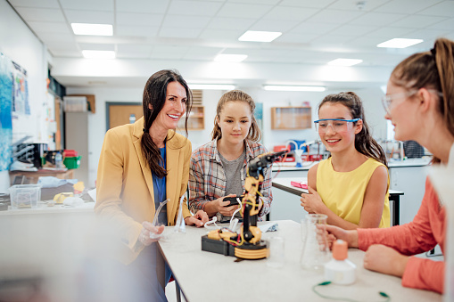

THE INNOVATIONS EXPERTS PREDICT IN 2030
Social media: Experts see a reckoning coming for social platform companies and leaders that will lead to large-scale changes
Privacy issues: Actions will be taken to better protect people’s privacy online
Misinformation: Due to growing concerns about the accuracy of information encountered online, efforts will be made to identify and address misinformation
Political and government reform: Democratic activity and government policymaking will open to more citizen engagement, and public activism will grow
Social connectivity: A number of innovations will help connect people and bring them together for a common purpose
Healthier living: Innovations will address physical and mental health; major change is coming for the health care sector
Artificial intelligence: AI will continue to improve and be applied to improve human lives online and offline
Education reform: Education systems will evolve in response to many multilayered societal changes
Labor and jobs: Business practices, individuals’ work lives and the larger economy will substantially change by 2030
Environmental issues: Climate change and other environmental issues will inspire innovation out of necessity
Additional innovations expected by experts
A notable share of experts is skeptical about the power and impact of civic and social innovations, especially in the next decade
2. Tech is (just) a tool
3. Power dynamics play a key role in problems and innovation
4. It’s all just history repeating itself
5. Tech causes more problems than it solves
6. The net effects in 10 years will be negligible
Around the world, people who trust others are more supportive of international cooperation
